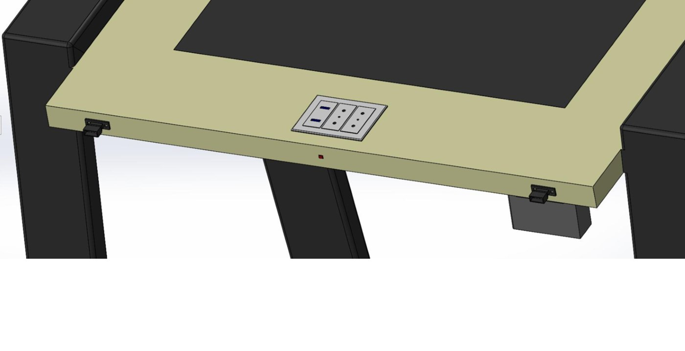

Obiettivo del progetto
Sviluppare un'alternativa alle sedute con tavolino integrato, con attenzione a ergonomia, modularità, alimentazione elettrica e libertà di movimento.
Attività del gruppo
- Raccolta e classificazione dei bisogni, definizione delle metriche e delle specifiche obiettivo tramite House of Quality.
- Generazione di soluzioni e selezione mediante concept screening e scoring; definizione di architettura e interfacce.
- Rappresentazione dell'assieme in SolidWorks e stima dei costi di componenti, lavorazioni e assemblaggio.
Risultati
Il concept selezionato prevede banco indipendente, seduta regolabile, collegamenti fra unità e accessori modulari. La stima complessiva iniziale è di 170 euro per unità; lo scenario di produzione in serie ipotizza una riduzione del 30%, fino a 119 euro.
Ipotesi e limiti
Sviluppo concettuale e valutazione preliminare: i costi sono stime di progetto e non risultati di una produzione industriale avviata.

Ruolo nel progetto
Partecipazione al progetto universitario in un team di quattro persone. Concept, modello e valutazioni sono presentati come risultati del gruppo.
Immagini tratte dagli elaborati del team. Scheda di sintesi per il portfolio; documentazione completa disponibile su richiesta.